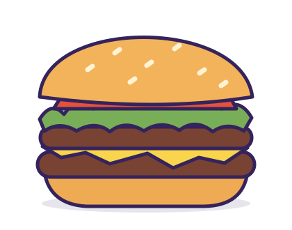

Hambre terrestre. Sabor espacial.Concepto de demostración / Nº 07
Fuera de
órbita.

DOBLEDE TODOUna pequeña pausa.
Un gran bocado.
Burgers, patatas y cero solemnidad.
02 / Control de misiónTu hambre.
Tu hambre.
Tus reglas.
Juega a montar tu combo. El precio cambia con tus elecciones.
Todo bajo control.
¿Hay opción vegetal?
Sí. Planeta Verde es nuestra propuesta con una burger de garbanzo. Esta es una carta ficticia: un local real debe confirmar ingredientes y preparación.
¿Y los alérgenos?
Abre cada producto para consultar los ingredientes y alérgenos de la receta de muestra. No podemos garantizar ausencia de trazas en un negocio real.
¿Puedo hacer un pedido?
Esta web es un diseño de demostración. Puedes explorar la carta y probar el configurador, pero no se envían pedidos ni se efectúan cobros.